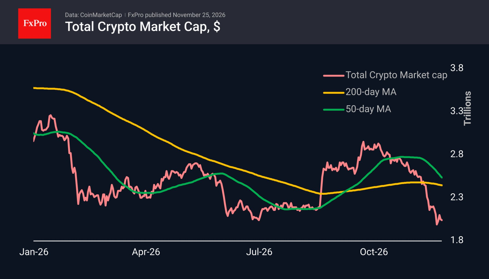
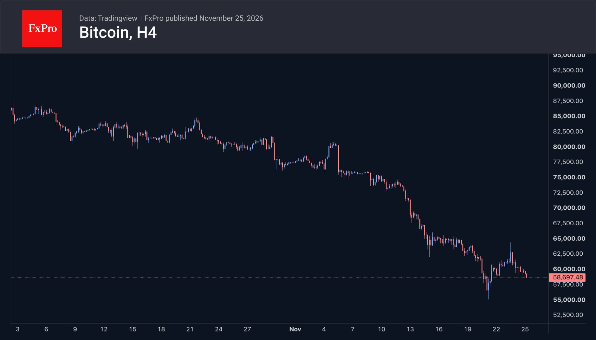

SEO
Meta Title: Crypto market drifts lower again to $2.04T
Meta Description: Crypto market cap slipped to $2.04T, with Bitcoin near $59K. In our view, a breakout from the $55–65K range will set the direction of the next move.
Crypto market drifts lower again to $2.04T
- Crypto market capitalisation fell 0.5% in 24 hours to $2.04T as equities declined for a second day.
- Bitcoin's local support has shifted to $59K, and the established trend points to a possible dip to $58K.
- The key pivot levels are $65K and $55K: a breakout from this range will set the direction of the move.
Market Overview
The crypto market capitalisation has edged down slightly, falling to $2.04T (-0.5% over 24 hours). Equity markets have been falling sharply for a second day, giving up three-quarters of Monday's gains. The main fundamental driver remains expectations of fairly aggressive monetary tightening, which is dampening demand for risk assets. Volatility is currently lower than at the end of last week, but it could spike if the Nasdaq-100 falls below last Friday's lows. Lower volatility is also helping the crypto market capitalisation hold above Saturday's lows.
Bitcoin is drifting lower, and its local support zone has shifted to the $59K area. Based on the established trend, the price could fall to $58K by the end of the day. The balance of market forces remains in the bears' favour, with silver and gold hitting new lows and no clear signs of a reversal in the dollar. Today's release of the Personal Consumption Expenditures (PCE) price index at 13:30 GMT could also play a role. Among the nearest pivot levels, we highlight $65K (the area of local highs) and $55K (Saturday's lows). Should the price break out of this range, we can expect the move to continue in the direction of the breakout.
News Background
The Bitcoin institutional buying indicator shows the strongest selling on record. Long-term investors are selling BTC at an average loss of around 33%, according to CryptoQuant.
The Capriole indicator, which tracks the behaviour of long-term investors, has fallen to levels last seen at the lows of 2012, 2018, 2020 and May 2022. Companies holding Bitcoin reserves are capitulating completely, according to Capriole Investments. Based on on-chain metrics, Bitcoin appears to be at its most undervalued since November 2022.
Grayscale believes Bitcoin is oversold, but the main threat to the asset remains uncertainty around the artificial intelligence industry. Problems faced by technology companies could intensify the pressure on cryptocurrencies.
The current Bitcoin bear market is so far the shallowest of the four major downturns in the asset's history, according to Galaxy. From its October 2025 peak, BTC has fallen by about 53% at most. In previous cycles, the asset lost between 77% and 85%.
The share of meme coins in the altcoin market has fallen from 11% to 3%, a historic low. Meme coins on the Solana network have lost almost half their market capitalisation since August, according to analyst Darkfost. Sales of meme coins on Binance exceed purchases by $1.5 billion.
The Ethereum Foundation has accelerated preparations to protect the network against threats from artificial intelligence and quantum computers by doubling the size of its protocol security team. Protecting ETH against quantum attacks has proved more challenging than the transition to the proof-of-stake consensus algorithm four years ago.
What to watch
Base case: in our view, the balance of forces remains with the bears, and Bitcoin could drift towards $58K. A breakout of the $55–65K range will set the direction of the next move.
Risk: a return above $65K would break the downtrend, while a drop below $55K would open the way to a continued sell-off.
Upcoming: US PCE and GDP today; US Thanksgiving on 26 November, so liquidity will be thinner. Check the economic calendar for more events.
The FxPro Analyst Team
Charts

Source: CoinMarketCap, as of 25 November 2026.
Alt text: Line chart from January to November 2026: total crypto market capitalisation (pink line) has fallen to $2.04 trillion, near Saturday's lows, below the 200-day (yellow line) and 50-day (green line) moving averages.

Source: TradingView, as of 25 November 2026.
Alt text: 4-hour candlestick chart of Bitcoin from October to 25 November 2026: after Saturday's low near $55.5K and a rebound to $64K, the price has fallen to $58,697.
Links
- expectations of fairly aggressive monetary tightening → "As the AI bubble deflates, so do hawkish dollar bets", 23.11.2026 → https://fxpro.news/market-overview/as-the-ai-bubble-deflates-so-do-hawkish-dollar-bets/
- Nasdaq-100 → "Is Nvidia the new Cisco? Dot-com lessons for stocks", 23.11.2026 → https://fxpro.news/market-overview/is-nvidia-the-new-cisco-dot-com-lessons-for-stocks/
- Saturday's lows → "Crypto market rebounds after slipping to two-year lows", 23.11.2026 → https://fxpro.news/crypto/crypto-market-rebounds-after-slipping-to-two-year-lows/
- Bitcoin (instrument page) → https://fxpro.news/quotes/bitcoin/
- drifting lower → "Bitcoin's short-lived positive momentum", 24.11.2026 → https://fxpro.news/crypto/bitcoins-short-lived-positive-momentum/
- Solana (instrument page) → https://fxpro.news/quotes/solana/
- ETH → Ethereum (instrument page) → https://fxpro.news/quotes/ethereum/
- Check the economic calendar for more events. → https://fxpro.news/economic-calendar/